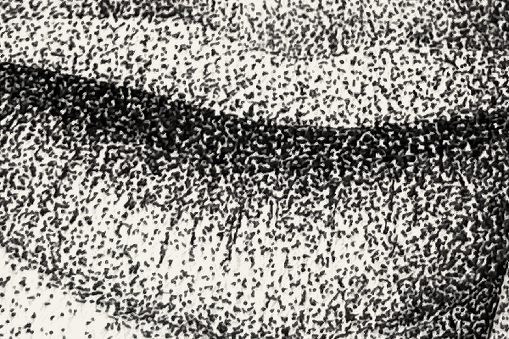
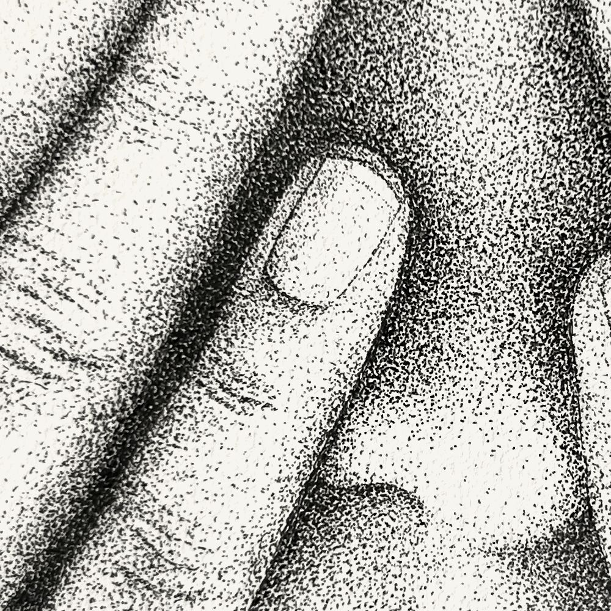
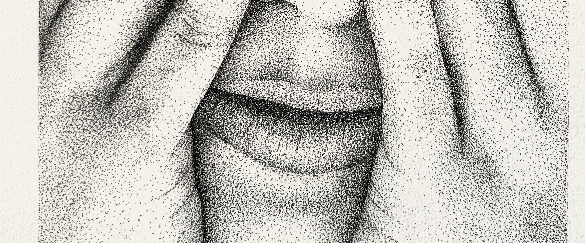
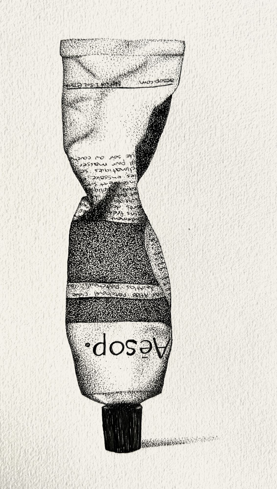
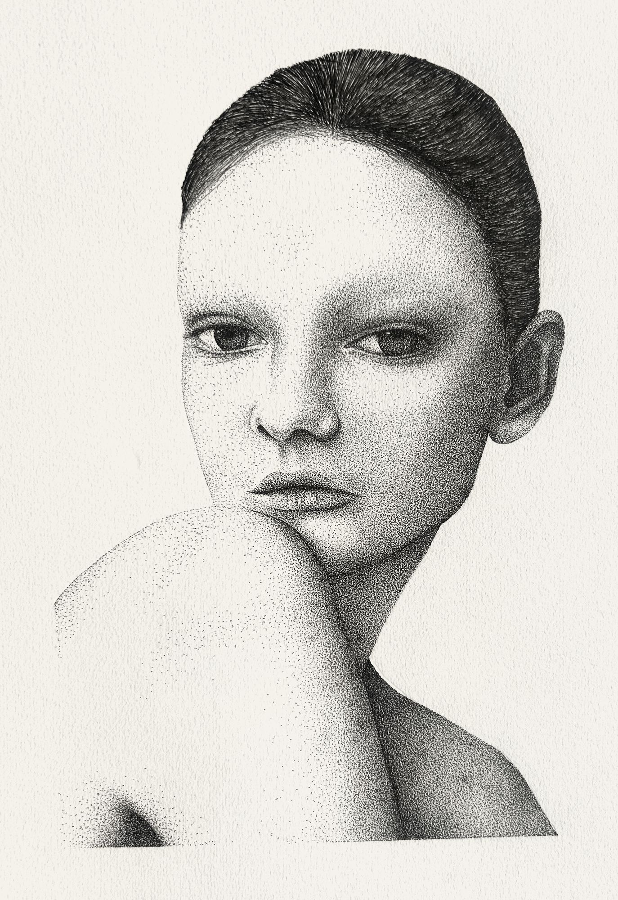

ART / IMAGE / OBJECT
The art of
looking closer.
An exploration of portraiture, form and the quiet intricacy of the natural world.
Explore selected work ↗01 ORIGINAL WORKS · BLACK PIGMENT INK ON PAPER

A visual language built from precision, texture and the considered placement of a single mark.
THE PRACTICE OF SARAH LAUREN01 — THE WORK
Selected
works.
Original drawings in black pigment ink. Each work is made by hand, with an emphasis on line, tonal detail and the expressive potential of the human form.
THE LANGUAGE OF THE MARK
Nothing is
blended.


Every shadow is made from single points of ink, placed one at a time.

02 — ART IN OTHER FORMS
Beyond
the page.
Exploring the translation of original artwork into silk, textiles and collectible objects. A study in image, material and the possibilities of making.
OBJECTS & TEXTILES — IN DEVELOPMENT03 — SELECTED DIRECTIONS
Creative
possibilities.
Original artwork and distinctive visual concepts for fashion, beauty, fragrance, interiors and lifestyle. Each application begins with the artwork, not a template.


Independent visual explorations. These images are original artworks shown in possible creative contexts, not commissioned collaborations or products for sale.
04 — THE ATELIER
Thousands of marks.
One at a time.
Stippling builds an image from single points of ink. There is no blending and no wash. A shadow is simply more dots, set closer together.
Each drawing begins as a faint outline. Tone is built slowly across the paper, with fine line reserved for the places that need it, such as hair.
- Pen
- 0.05 mm fine line
- Ink
- Black pigment ink
- Paper
- 300 gsm
- Method
- Stipple and fine line, by hand

05 — THE ARTIST
A practice shaped by
fashion, form and detail.
Sarah Lauren is an independent artist in Aotearoa New Zealand working primarily in black ink.
With a background in fashion design, the practice brings an attention to line, proportion and material to portraiture, still life and botanical form.
Original artwork sits at its centre, with selected creative collaborations extending the work into textiles, objects and visual identity.